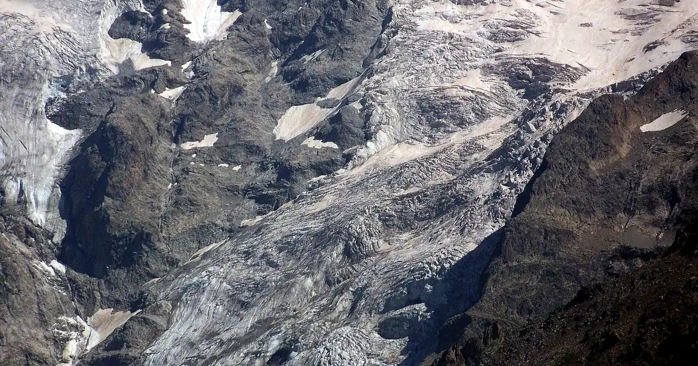
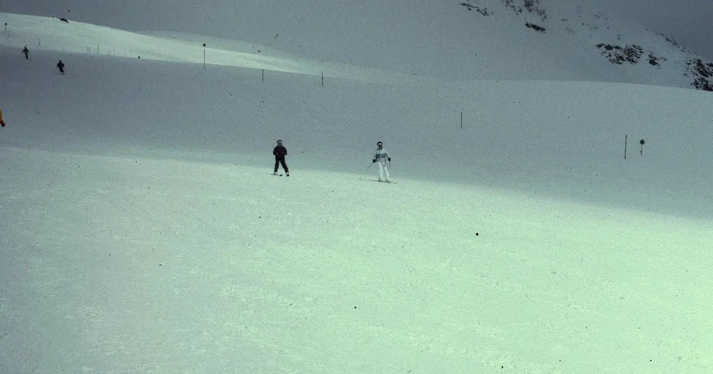

Bollettini neve · Altezza neve
Bollettini neve quotidiani per sciatori: dove c'è neve, cosa arriva e dove sciare, dalla mappa neve di SnowScope e dalle stazioni di misura. Ogni numero viene dai dati del giorno.

Un'immagine, 100 catene montuose nelle Alpi, nei Pirenei, nell'Atlante e in Nord America: il Canada guida con l'89% di copertura nevosa, le Alpi arrivano al 45%, l'Atlante e il nord-est degli Stati Uniti sono ancora senza neve.
Abbiamo confrontato la mappa dell'altezza neve di SnowScope con 2.012 stazioni di misura: RMSE 7,7 cm, scarto -0,5 cm, neve o niente neve giusto l'88 % delle volte. Cosa funziona, cosa non ancora e cosa migliora dopo.

Mount Washington Alpine Resort (Canada) ha oggi la neve più alta nel Canada occidentale, con circa 145 cm sui pendii superiori. Seguono Whistler …

C'è più neve di un anno fa? Abbiamo confrontato oggi con il 8 novembre dell'inverno scorso in 4 località sulle Alpi: 0 hanno più neve ora, secondo il …

Telluride, manto nevoso: uno strato di 45 in in quota (8 novembre). La neve più abbondante nell'Ovest degli USA è a Kendall Mountain: circa 47 in …

0 cm a 2.052 m il 7 novembre, come in molti inverni passati. Lo scorso inverno ha raggiunto un picco di 100,6 cm. Grafico interattivo e dati.

La neve più abbondante nell'Ovest degli USA è a Kendall Mountain: circa 50 in (127 cm) sui pendii superiori, secondo il nostro modello neve. Poi …

Le località sciistiche dell'Atlante oggi non hanno neve sulle piste. Il nostro modello trova neve solo sulle vette più alte: circa 80 km² di …

Abbiamo confrontato la neve di oggi in 3 località sulle Alpi con la stessa data in ciascuno dei 46 inverni passati. 0 sono nettamente sopra la norma.

Estació d'esquí Port del Comte (Spagna) ha oggi la neve più alta sui Pirenei, con circa 29 cm sui pendii superiori. Seguono Aramón Cerler con 21 cm e …

Abbiamo confrontato la neve di oggi in 5 località nell'Ovest degli USA con la stessa data in ciascuno dei 46 inverni passati. 3 sono nettamente sopra …

Oukaimden (Marocco) ha oggi la neve più alta sull'Atlante (Marocco), con circa 1 cm sui pendii superiori. Seguono Habri con 0 cm e Michlifen con …

Abbiamo confrontato la neve di oggi in 4 località sui Pirenei con la stessa data in ciascuno dei 46 inverni passati. 1 sono nettamente sopra la norma.

Bonneval-sur-Arc (Francia) ha oggi la neve più alta sulle Alpi, con circa 52 cm sui pendii superiori. Seguono La Grave con 52 cm e Orelle con 52 cm. …

Le località sciistiche dell'Atlante oggi non hanno neve sulle piste. Il nostro modello trova neve solo sulle vette più alte: circa 60 km² di …

La neve più abbondante nell'Ovest degli USA è a Kendall Mountain: circa 51 in (130 cm) sui pendii superiori, secondo il nostro modello neve. Poi …

La neve più abbondante nel Canada occidentale è a Silver Star: circa 112 cm sui pendii superiori, secondo il nostro modello neve. Poi vengono Big …

La neve più abbondante sulle Alpi è a Terenten: circa 73 cm sui pendii superiori, secondo il nostro modello neve. Poi vengono Speikboden (50 cm) e …

Abbiamo confrontato la neve di oggi in 3 località sulle Alpi con la stessa data in ciascuno dei 46 inverni passati. 0 sono nettamente sopra la norma.

Abbiamo confrontato la neve di oggi in 4 località sui Pirenei con la stessa data in ciascuno dei 46 inverni passati. 1 sono nettamente sopra la norma.

La neve più abbondante nell'Ovest degli USA è a Kendall Mountain: circa 48 in (122 cm) sui pendii superiori, secondo il nostro modello neve. Poi …

La neve più abbondante sulle Alpi è a Bonneval-sur-Arc: circa 55 cm sui pendii superiori, secondo il nostro modello neve. Poi vengono Schnalstal …

La neve più abbondante nell'Ovest degli USA è a Kendall Mountain: circa 53 in (134 cm) sui pendii superiori, secondo il nostro modello neve. Poi …

La neve più abbondante nel Canada occidentale è a Big White: circa 91 cm sui pendii superiori, secondo il nostro modello neve. Poi vengono Silver …

La neve al 3 novembre 2026: Kendall Mountain 53 in (134 cm) dopo una tempesta, Big White 91 cm, le Alpi fino a 55 cm a Bonneval-sur-Arc. Dati del modello e delle stazioni.